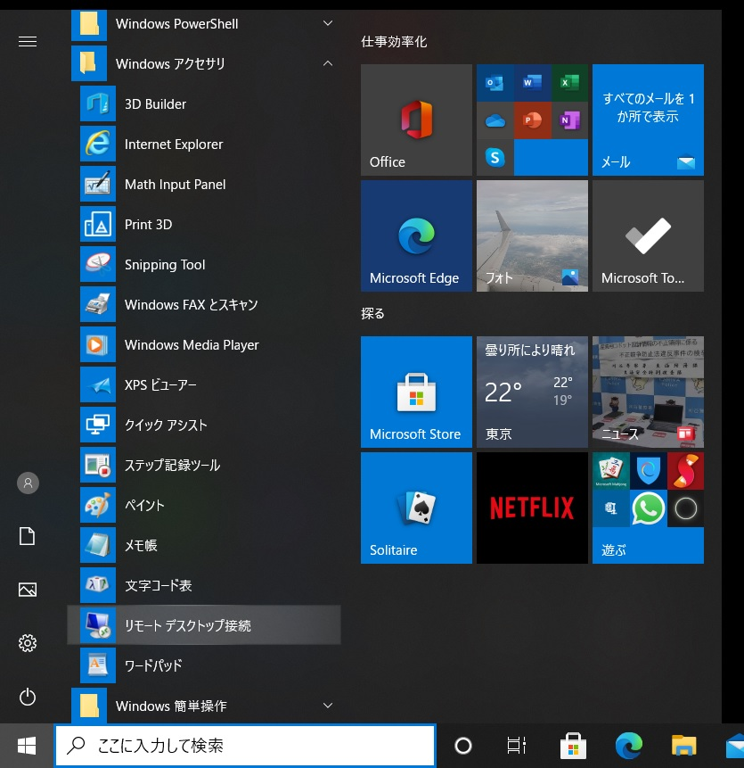
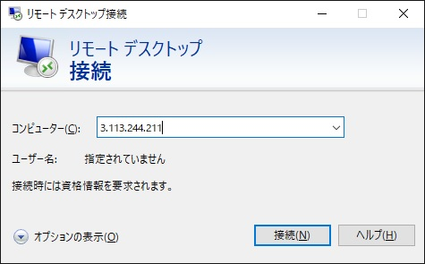
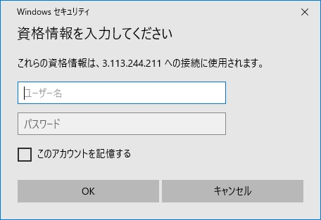
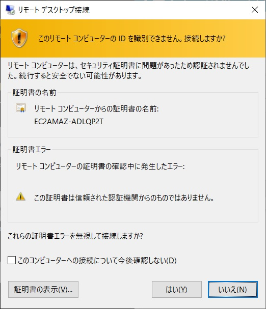
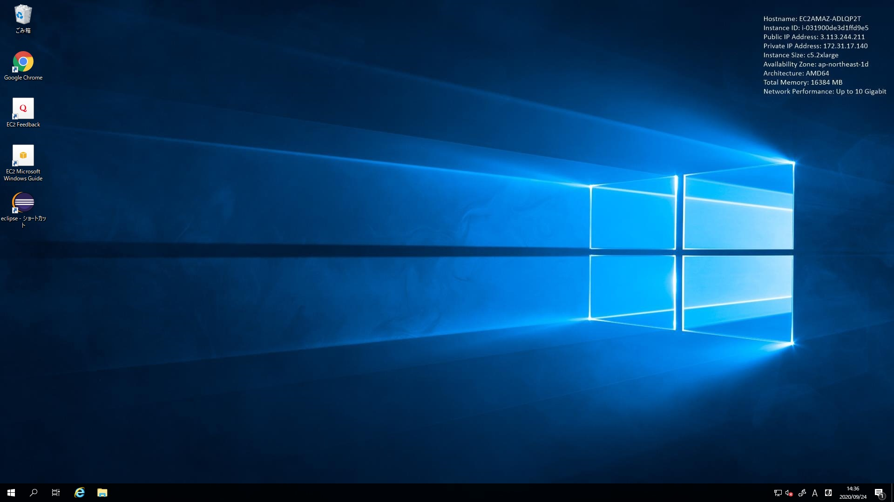
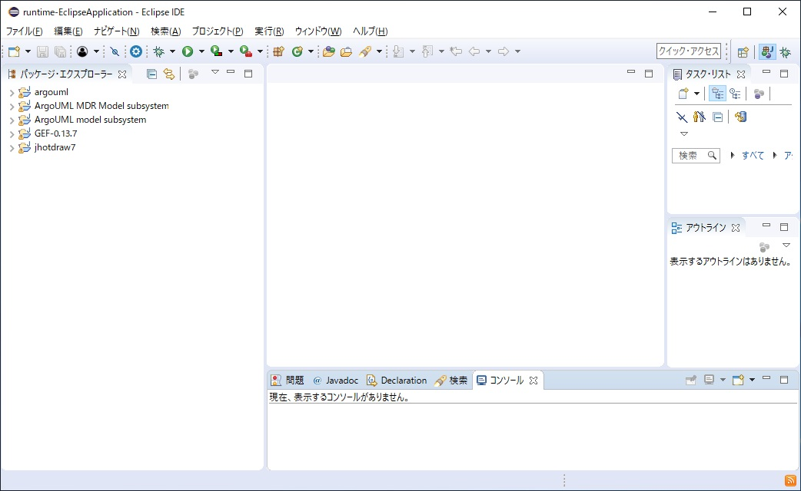
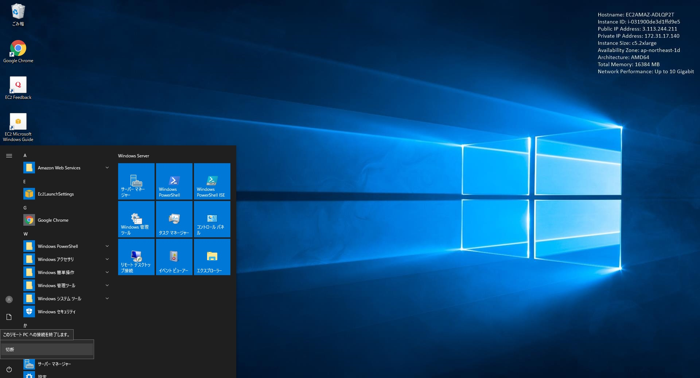

EC2インスタンスへのログイン方法
Windows Server 2019 の実験用サーバを Amazon EC2 インスタンスとして立ち上げております．
皆様のPCからは，リモートデスクトップを用いて以下のような手順でログインしていただきます．
Mac をご使用でリモートデスクトップをお持ちでない方は，App Store から「Microsoft Remote Desktop」をインストールしてください．
以下，Windows の画面を用いて手順の説明を行います．
-
スタートメニューからWindowsアクセサリを選び，リモートデスクトップを起動します．

-
接続先としてお送りしたipアドレスをご入力いただきます．

-
お送りしたユーザ名とパスワードでログインしていただきます．

-
「はい」を押します．

-
接続が成功すれば実験用サーバの画面が表示されます．

-
デスクトップに配置してあるEclipseの起動アイコンをクリックし，起動確認を行います．以下のようにEclipseの画面が表示されたらオッケーです．

-
作業が完了したら，スタートメニューから切断を選んで，ログアウトします．

順方向トレースデバッガの説明へ進む